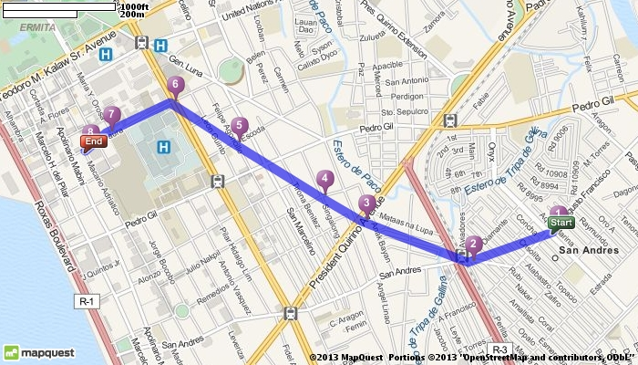

© 2013 Thomas Dy - Powered by Nikola
© 2013 Thomas Dy - Powered by Nikola
In the last post, I talked about how we now have data about jeepney and bus routes in the Philippines. The data is actually in the GTFS format, which is the format the Google Maps consumes transit data. Apparently, the government will be submitting the GTFS data later this year. Transit directions for Metro Manila in Google Maps would be wonderful. That said, it definitely raises the bar for the app challenge people.
In the last post, I mentioned the quality of the data isn't quite good. Even before seeing the data, I was already a bit unsure of it. The key problem is how you model the routes. The GTFS format was inherently designed for more well developed and organized transit agencies which isn't exactly what we have in the Philippines now.
One potential problem is the nature of the jeeps and buses. GTFS routes are a collection of trips which are a sequence of stops. However, we don't have jeepney stops, and even if we did they still just stop anywhere. There are also times where jeeps will take a shortcut if no passengers need to get dropped off along their normal route.
From what I've seen of the data, they handled the first problem well enough. Stops are defined as where people typically get on the jeep or bus. This is good, but they didn't define a shape for the routes. There is no information as to which exact roads they pass through. All we have to go by are the stops to show the route on a map.

The problem isn't that bad though. The agencies could still add the shapes later on. Or maybe an app challenge participant could make an app around fixing the routes via crowd-sourcing or similar. The shape itself isn't that important for a rudimentary directions app, but if we want better apps, we will need better data.
There were also some minor issues with the data itself. Some of the files had extra columns. This normally isn't an issue, but it caused problems for GTFS SQL importer. There were also problems with matching the shape data with the stops when I tried it with OneBusAway. They could probably be fixed but that's for another day.
Last week, the DOTC launched the Philippine Transit App Challenge. It's a competition to build something great using the newly available 1) jeepney/bus/rail routes and 2) traffic incident data in Metro Manila and Cebu.
I'm actually quite excited about this as it's not everyday our government does wonderful things. Many people have been waiting for this kind of data to be available. Before, the only way to figure out which jeeps to ride to get from A to B is by asking other people. The website of the LTFRB used to just have a list of jeepney routes, but nothing else, no maps or list of stops.
During the launch, they also presented how CITOM (the Cebu MMDA) is pilot-testing a traffic tracking system. What they did was supply Android phones to taxi drivers. The phones send GPS data which can then be aggregated to see what the average speeds along streets are. This also benefits the taxi company as it provides easy tracking of their taxis compared to their old telephone/radio with pen-and-paper process.
The route data are already available, as well as the Cebu and Metro Manila incident data. You do have to register to access them though. Right now, they're just one-off dumps of the data but the various agencies have promised to provide consistently updated data. This will be provided via ASTI later in the year.
I've just started looking at the route data and playing around with it. The quality could be better, but I'm glad we at least have something to work with.
© 2013 Thomas Dy - Powered by Nikola